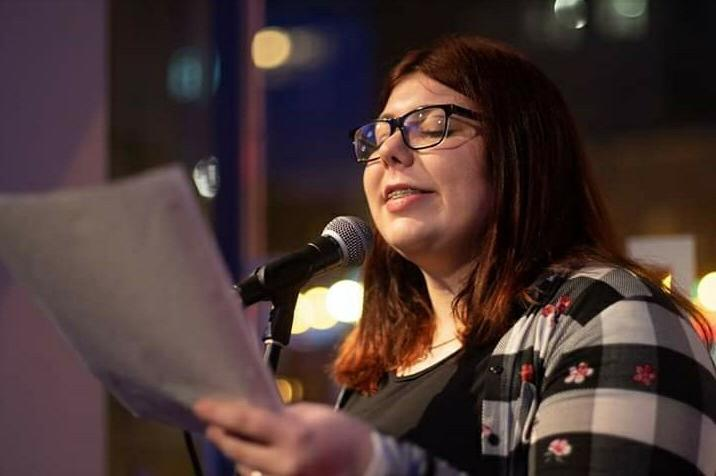
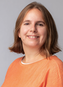
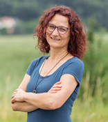
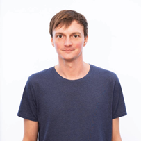
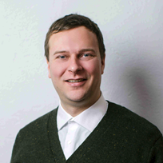
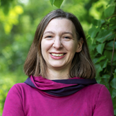

ÜBER UNS..
Wir sind Psychologiestudierende von BÖP-S und
wir möchten einen Beitrag zur Entstigmatisierung von psychischen Krankheiten leisten.
Deshalb organisieren wir am 14. & 15. Mai 2022 eine Kunstausstellung, Workshops und einen Poetry Slam.
Ziel ist es psychischen Erkrankungen ein Bild zu geben, sie sichtbar zu machen und mit Tabus zu brechen.
Kunstausstellung & Poetry Slam
K U N S T A U S S T E L L U N G
In der Galerie werden diverse Künstler:innen auf rund 55 m² Werke zur psychischen Gesundheit & Krankheit ausstellen.
Die Ausstellung ist am Samstag, 13-18 Uhr und am Sonntag, 12:30-17 Uhr für alle Interessierten geöffnet.
Freiwillige Spende erwünscht – diese fließt zu 100% an die Künstler:innen.
Beim Event werden Künsterl:innen aus verschiedensten Richtungen ihre Werke zeigen.
Ebenfalls haben wir als Abendprogramm ein Poetry Slam geplant,
wobei das Thema Entstigamtisierung von Psychischen Störungen noch aufgegriffen wird.
P O E T R Y S L A M
Das ist gelebte Literatur, performte Gedichte und die lebendigste Form um Sprache zu teilen.
Alle Slammer:innen haben die Chance, einen selbstverfassten Beitrag mit sechs bis zehn Minuten Länge auf der Bühne vorzutragen.
Inhaltlich dreht sich der Abend um das Thema Mental Health.
Einlass: ab 19:00 Uhr Beginn: 19:30 Uhr Ort: Galerie

Laura Hellmich ist bekannt für ihre aufrichtigen und mutigen Texte, in denen sie in beeindruckender Weise selbst für Dinge Worte findet, die sich schwer beschreiben lassen - ob zu psychischen Krankheiten, sozialkritischen Themen oder der eigenen Vergangenheit. Wir bestaunten sie schon bei nationalen und internationalen U20 Meisterschaften.
Nathalie Rouanet, geboren 1966 in Frankreich, kam vor dreißig Jahren nach Wien. Sie studierte Germanistik und Romanistik in Toulouse und Wien. Sie ist Autorin, Übersetzerin für Film, Theater und Literatur, sowie Slam Poetin unter dem Namen Ann Air. Lyrik und Prosatexte erschienen in französischen und österreichischen Zeitschriften. Sie erhielt Stipendien und Förderpreise, zuletzt den 2. Irene-Harand-Preis.
https://nathalie-rouanet-herlt.com/
Katharina Wenty widmet sich großen Themen in kleinen Details und symbolischen Bildern. Krankheit und Gesundheit, Körper und Geist, Leben und Tod ringen in ihren lyrischen Texten um Aufmerksamkeit, die sie seit ihrem 18. Lebensjahr in verschiedenen Anthologien sowie Literaturzeitschriften publiziert und 2022 gebündelt in ihrem Buch "Hautflügelmieder" im Lektora Verlag erschienen. 2018 wurde sie Poetry Slam Landesmeisterin für Wien, Niederösterreich und Burgenland und erreichte den 5. Platz bei der Poetry Slam Europameisterschaft.
Inzwischen trat sie in über zehn Ländern auf drei Kontinenten auf, und zählt zu den erfolgreichsten Poetry Slamerinnen Österreichs. Sie veranstaltet und moderiert monatliche Poetry Slams mit internationalem Schwerpunkt in Mödling, und wirkt an der Organisation jährlich stattfindender Poetry Slam Europa- und Weltmeisterschaften mit. Katharina lebt, studiert und arbeitet in Wien und Turin.
LiRow steht seit 2018 auf den Brettern des Poetry Slams und zeichnet mit Worten zu psychischen Krankheiten, sowie Feminismus und Queerness gerne Bilder in den Köpfen des Publikums. Vor kurzem hat sie auch ihr zweites Buch mit einer Ansammlung von Poetry Slam Texten veröffentlicht.
Maurice Graft ist hauptberuflich irgendetwas soziales und arbeitet nebenher als Texteschreiber, Spoken Word-Artist und Fotograf. In seinen Arbeiten thematisiert er verborgene Prozesse und subtile Vorgänge innerer Welten, die er ungefiltert nach außen kehrt. Tabulos kritisiert er dabei gesellschaftliche Normen und feiert ihre Entrückung. Seine Texte, in denen er zart besaitet und etwas empört einen Fingerzeig darauf gibt, wie divers sich gelebte Realitäten gestalten können, illustriert er mit fotografischen Werken, welche durch ihren stets dunkelbunten Unterton gekennzeichnet sind.
Roxana S studiert Psychologie an der Hauptuniversität und Bildende Kunst an der Akademie der bildenden Künste Wien. In ihrer kreativen Arbeit setzt sie sich mit ihrer psychischen Verfassung auseinander und gibt dieser mittels Schrift, sowie Farbe und Form eine Gestalt, deren Publikation eine Brücke zum Menschsein anderer aufbaut.
Unsere Workshops
Wir laden Dich ein, Deine ureigene Andersartigkeit und die Vielfalt beim Gestalten in der Gruppe in entspannter Atmosphäre zu entdecken.
Künstlerische Vorkenntnisse sind nicht erforderlich, nur eine Portion Neugierde und die Bereitschaft sich einzulassen. Wir freuen uns, Dich auf Deiner kreativen Reise begleiten zu dürfen.
 
Referent:innen: Mag.a Veronika Wieser und Mag.a Andrea Kanicki
Zeit: Samstag 15:00-16:30 Uhr
Anmeldung:Eventbrite
Beim Improvisationstheater entstehen Szenen ganz spontan aus dem Nichts heraus. Man kann sich in allen möglichen Charakteren, Emotionen und Situationen austoben und alles sein, was man möchte. Durch lustvolles Scheitern und den freien Fluss der Kreativität, werden Stück für Stück Hemmungen aufgebrochen, dies wirkt sich positiv auf die psychische Gesundheit aus - Impro Diem.

Referent: René Liball
Zeit: Samstag 15:00-17:00 Uhr
Anmeldung:Eventbrite
In einem Impulsvortrag wird Michael Josef Seiss über Persönlichkeitsstörungen als Beziehungsstörungen und Störungen der Funktionen des Selbst sprechen. Darüber hinaus werden Fragestellungen, wie “Was sind Persönlichkeitsstörungen?”, “Wie fühlt sich ein Mensch mit dieser Erkrankung?” und “Wie kann das Umfeld mit Betroffenen umgehen?” behandelt.
Referent: Michael Josef Seiss
Zeit: Sonntag 13:30-14:15 Uhr
Anmeldung: Eventbrite
Musenküsse beflügeln die Kreativität und stärken spielerisch die Resilienz.
Einfache kreative Übungen lenken den Fokus aufs Hier und Jetzt, lassen dich aus dem Gedankenkarussell aussteigen und schenken dir neue Perspektiven, Entspannung und freudvolle Momente.

Referentin: Mag.a Melanie Mezera
Zeit: Sonntag 16:00-17:00 Uhr
Anmeldung:Eventbrite